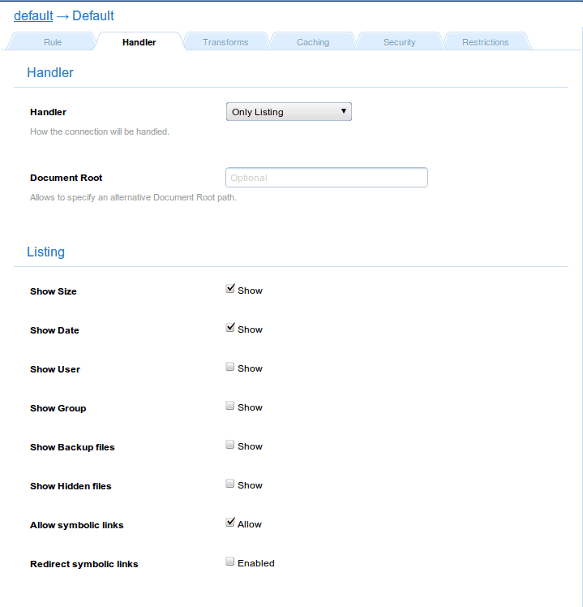

Parameters
| Parameters | Type | Description |
|---|---|---|
| pathInfo | boolean | Makes the handler to stop parsing the pathinfo string. Default: Disabled. |
Besides, it inherits all the parameters from the _file and _dirlist handlers.
Note, Pathinfo explained:
$ echo "This a test" > /tmp/1/2/test $ curl http://localhost:9999/1/2/test This a test $ curl http://localhost:9999/1/2/test/this/is/pathinfo This a test $ curl http://localhost:9999/1/2/test.no -D - | grep HTTP HTTP/1.1 404 Not Found
Examples
With this configuration:

Will return something like: